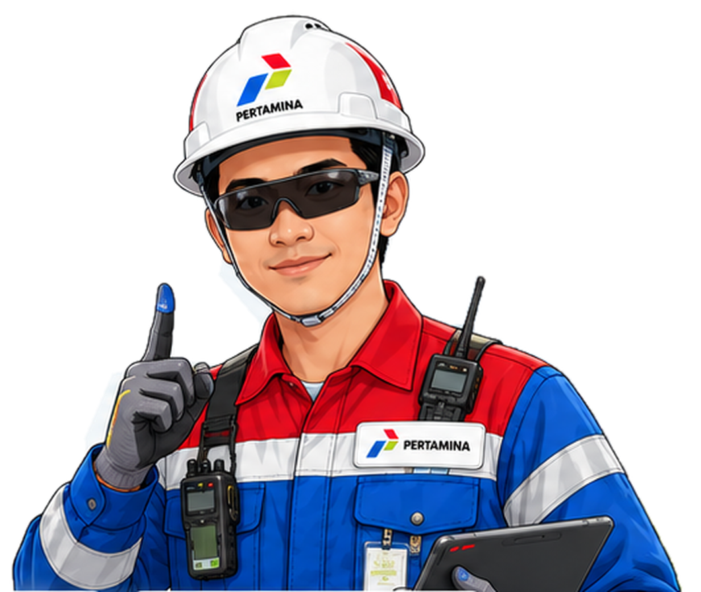
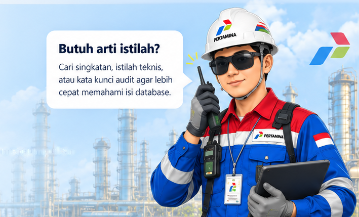
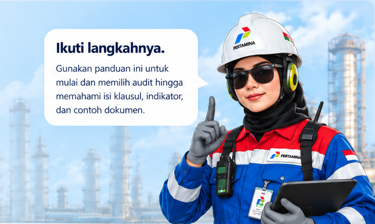

Mulai dari jenis audit, pilih kelompok besar, pahami klausul dan indikator, lalu lihat contoh dokumen pendukung yang relevan.
Temukan informasi dengan kode klausul atau kata kunci sederhana.
Halo!Selamat datang di Audit Knowledge Base. Di sini kamu bisa mempelajari persyaratan audit, indikator, dan contoh dokumen pendukungnya.

▤
0Jenis auditKategori dalam database
›
▱
0Pilar auditKelompok terpetakan
›
▤
0Topik / indikatorDalam basis pengetahuan
›
▱
0Contoh evidenEntri referensi pendukung
›
TELUSURI DATABASE
Jelajahi berdasarkan jenis audit
ⓘ
Panduan edukatif, bukan protokol audit resmi. Contoh eviden adalah referensi penyiapan, bukan dokumen perusahaan. Persyaratan dan edisi standar harus diverifikasi dengan sumber resmi yang berlaku.
?
Baru pertama kali mempersiapkan audit?
Pilih jenis audit, pelajari klausul atau proses, lalu temukan contoh dokumen yang relevan.
EXPLORE THE LIBRARY
Jelajahi klausul & elemen audit.
Telusuri dari kelompok audit, klausul utama, subklausul, hingga contoh bukti yang sebaiknya dipahami.
Siap eksplorasi?Pilih jenis audit, gunakan filter, lalu buka detail topik untuk melihat penjelasan dan contoh eviden yang relevan.
Nomor sub-proses bukan nomor ekspektasi PDF 2018. Peran HC pada daftar utama mengikuti tabel final yang Anda berikan.
0 topik · Pilih topik untuk membuka penjelasan dan bukti
Dari umum → khusus
⌕
Tidak ada hasil untuk filter ini
Coba kata kunci lain atau pilih semua kategori.
AUDIT KNOWLEDGE BASE / PUBLIC EDITION
Peta audit, dari umum ke khusus.
Mulai dari jenis audit, pilih kelompok besar, lihat acuan yang disebut dalam tabel, kemudian baca indikator dan contoh dokumen yang mungkin relevan.
Halo!Selamat datang di Audit Knowledge Base. Di sini kamu bisa mempelajari persyaratan audit, indikator, dan contoh dokumen pendukungnya.
▤
0Jenis auditTersedia di database
›
▱
0Pilar auditTerpetakan
›
▤
0IndikatorDalam proses verifikasi
›
▱
0Contoh dokumenReferensi pendukung
›
Jelajahi berdasarkan jenis audit
Jelajahi peta audit
Pilih jenis audit dan telusuri kelompok besar sebelum membuka indikator dan contoh eviden yang relevan.
ⓘ
Referensi untuk sebagian kelompok masih memerlukan verifikasi. Penomoran PTK, hubungan OSHA/CCPS dengan PSAIMS, serta klausul ISO adalah rujukan awal sesuai file yang dikirim. Bagian SUPREME telah dipetakan ulang berdasarkan PDF 2018; kecocokannya dengan standar dan protokol audit tahun 2023 belum diverifikasi.
37 kelompok besar
01 · JENIS AUDIT→02 · KELOMPOK BESAR→03 · INDIKATOR→04 · CONTOH EVIDEN
⌕
Tidak ada peta yang sesuai
Coba kata kunci atau jenis audit lain.
AUDIT KNOWLEDGE BASE
Glosarium istilah audit.
Kamus ringkas istilah yang sering dijumpai saat mengumpulkan dan menyiapkan bukti audit.

GETTING STARTED
Dari bingung menjadi siap.
Empat langkah sederhana menggunakan database secara bertanggung jawab.

01
Pilih jenis audit
Contoh: ISO 9001 untuk mutu, ISO 45001 untuk K3, atau SUPREME untuk manajemen HSSE. SUPREME pada versi ini memakai sumber PDF 2018, bukan protokol 2023. Periksa tujuan dan ruang lingkup audit sebelum mencari bukti.
02
Telusuri klausul dari umum ke khusus
Mulai dari kelompok seperti Dukungan, kemudian buka kode spesifik seperti 7.2 Kompetensi. Nama kode harus disamakan dengan edisi standar yang digunakan auditor.
03
Cari pemilik dan contoh bukti
Gunakan filter HC, lihat contoh dokumen, lalu konfirmasi PIC dan versi dokumen sebenarnya. Jangan mengunggah data pekerja, catatan kesehatan, atau bukti rahasia ke website publik.
04
Tandai status persiapan
Pilih Belum dicek, Dalam proses, Siap, atau Perlu konfirmasi. Status disimpan lokal di browser Anda, tidak menjadi bukti resmi dan tidak tersinkron ke GitHub.
Struktur informasi
Jenis Audit → Kelompok Umum → Kode Klausul / Elemen → Penjelasan sederhana → Contoh Bukti → Status.
Catatan versi dan verifikasi
ISO 9001:2026 dan ISO 14001:2026 telah diterbitkan; ISO 45001 menggunakan edisi 2018 dengan amendemen 2024; ISO 50001 menggunakan 2018 dengan amendemen 2024. Pemetaan dari Excel awal bukan pengganti standar berlisensi atau daftar audit yang disahkan.
Sumber rujukan publik dan kebijakan data
Tautan di bawah adalah titik awal pengecekan. Sebagian topik (CDM, PSAIMS, SIAP SELAMAT, LENS) memerlukan dokumen checklist resmi dan persetujuan penggunaannya.